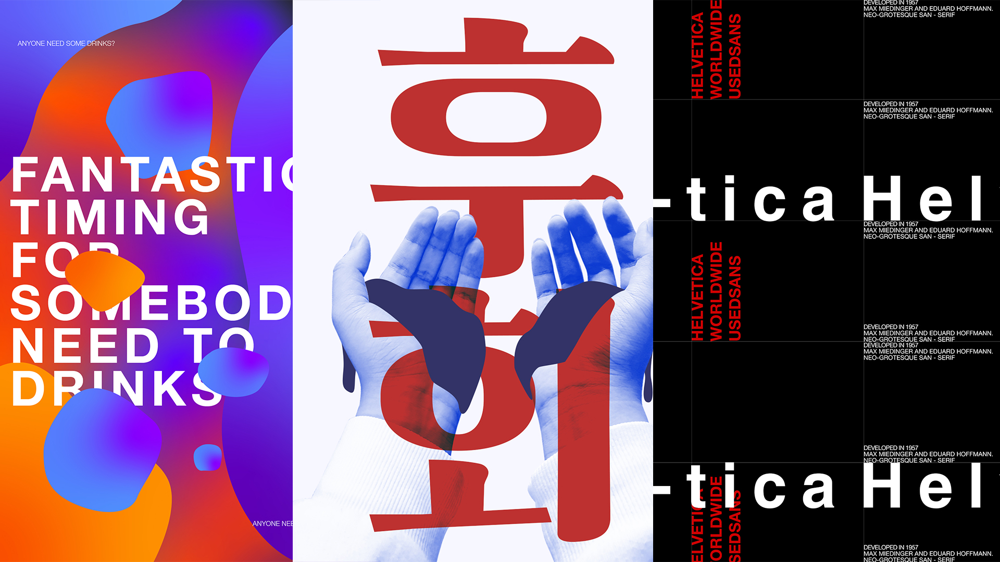
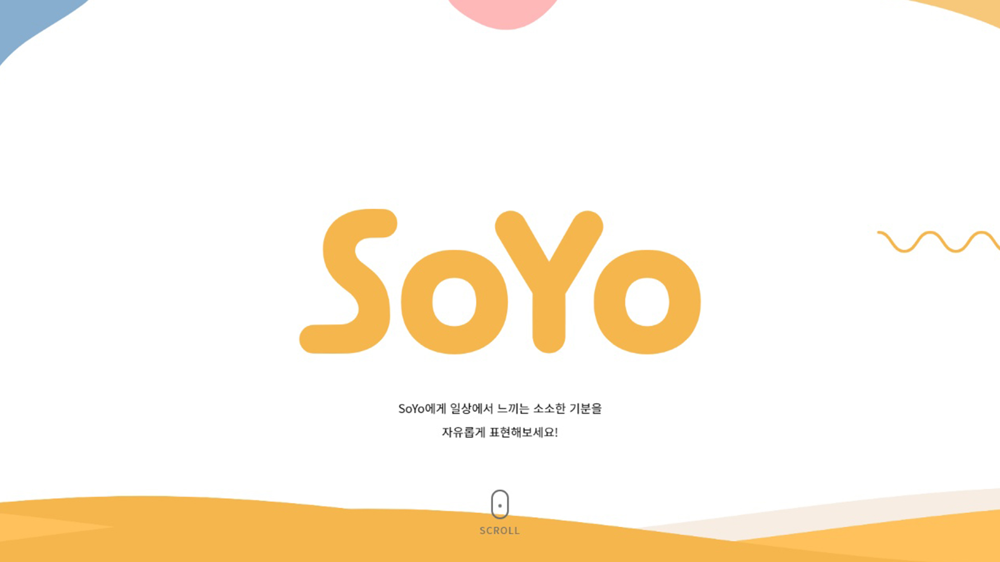
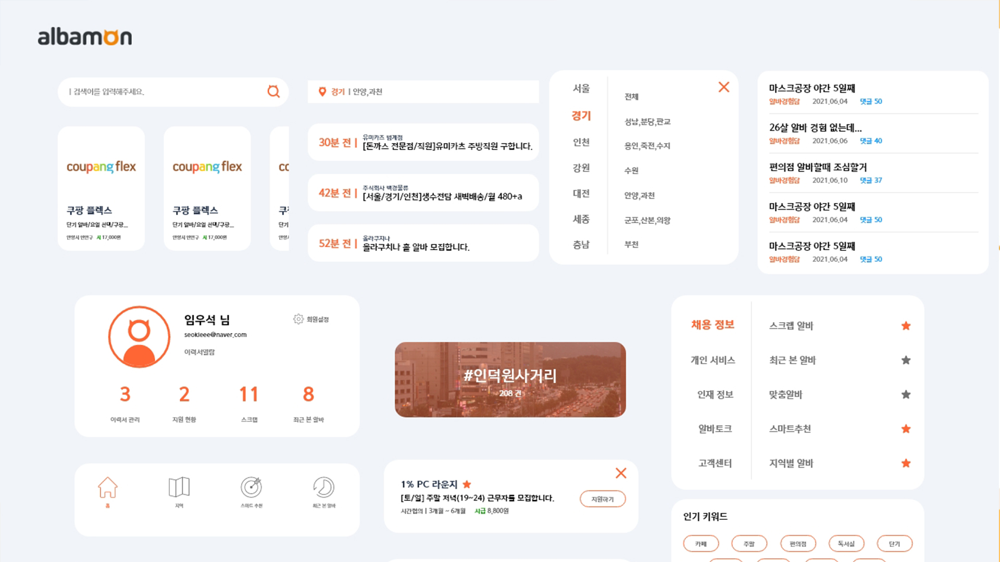

Visual Communication

비쥬얼 커뮤니케이션
담당교수 : 최미선 교수님
비쥬얼 커뮤니케이션 수업에서는 서체꼴을 활용한 다양한 디자인 작업물을 만들었으며,
서체꼴의 역사에서부터 다양한 표현방식과 응용까지 진행했습니다.
Project Studio

프로젝트 스튜디오
담당교수 : 김성은 교수님
프로젝트 스튜디오 수업에서는 팀을 구성해 서비스를 기획하고,
이에 맞춰 디자인과 웹 사이트 퍼블리싱까지 진행했습니다.
UI/UX Design

UI/UX 디자인
담당교수 : 김희헌 교수님
UI/UX 디자인 수업에서는 웹과 앱에서의 사용자 인터페이스 제작과,
Adobe XD를 활용한 프로토타이핑까지 진행했습니다.
Wed Publishing
웹표준 퍼블리싱
담당교수 : 이수경 교수님
웹표준 퍼블리싱 수업에서는 Html과 css를 활용해
웹 사이트를 만들고 이를 퍼블리싱하는 수업을 진행했습니다.